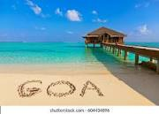
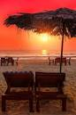
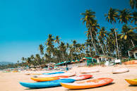
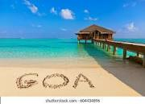
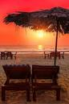
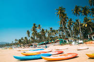

Day 1: Arrive in Goa. Explore the area around your hotel. Evening, visit Tito’s Lane to party.
Day 2: Visit Baga Beach and Calangute beach. Relax at a beach shack. Sunset at Anjuna, and night at Britto’s or nearby.
Day 3: Take a Grand Island tour to enjoy water sports and dolphin spotting. Evening party at any of the Clubs in Goa.
Day 4: Morning beach visit or shopping, and leave for the airport! Book Goa Tour Packages Now
A: Here are some of the things you can do in Goa on a 3 day visit:
• Visit North Goa beaches like Baga beach, Calangute beach and Anjuna beach
• Sightseeing of Old Goa churches like the Basilica of Bom Jesus, the Se Cathedral, the St. Francis Church, and Fontainhas
• Spend some time in a Goa beach shack
• Take a tour to Grand Island for water sports
• Party at any of the spots in Tito’s Lane
• Visit South Goa beaches like Colva beach, Palolem beach and Mobor beach Book Goa Tour Packages Now
A: While you can visit Goa for anywhere from 2 to 7 days, the ideal Goa trip is 4 to 5 days including your travel time from your home city. This gives you sufficient time to relax as well as explore the main places to visit in Goa.
• Use one day to explore North Goa beaches like Calangute beach, Baga beach and Anjuna beach, where you can also experience a variety of water sports like jet-ski rides, banana boat rides, parasailing etc.
• One day can be kept for cultural exploration – see the Old Goa heritage through the beautiful churches like Se Cathedral, Basilica of Bom Jesus, the Fontainhas area, and Panjim town where you can also shop for cashews and other souvenirs. Or, you could use the day to visit a spice plantation for something different.
• If you enjoy water sports, you might want to spend one day on a tour to Grand Island where you are taken by boat and can try snorkelling etc.
• If you want to see more beaches, spend a day visiting the beaches of South Goa, such as Palolem beach, Colva beach, Mobor beach etc.
• One day in Goa could be kept free for relaxing, swimming, and generally having a good time with your friends and family. Book Goa Tour Packages Now
: Goa offers a lot of interesting things to do for tourists at night. Some suggestions for you:
• Enjoy a 2 hour Dinner Cruise on the Mandovi River
• Visit a Night Market
• Go for a walk on the beach
• Visit a beach shack and have dinner by the beachside
• Party the night away at a club
• Visit one of the floating casinos in the boats moored at jetties in Panjim
• Go to a Silent Disco – Palolem Beach has a disco where the music is played through headphones so there is no noise pollution! Book Goa Tour Packages Now